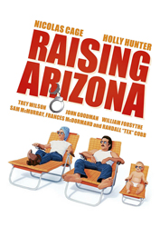
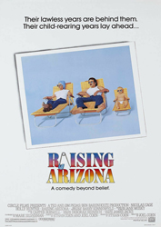
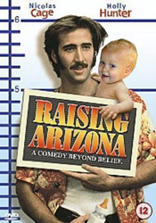
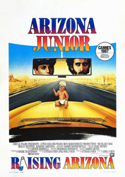
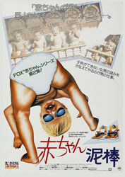

1987 - RAISING ARIZONA |
||||
CAST |
||||
Herbert I. (H.I.) "Hi" McDunnough |
- |
Nicolas Cage |
||
Edwina "Ed" McDunnough |
- |
Holly Hunter | ||
Nathan Arizona, Sr. |
- |
Trey Wilson | ||
Gale Snoats |
- |
John Goodman | ||
Evelle Snoats |
- |
William Forsythe | ||
Glen |
- |
Sam McMurray | ||
Dot |
- |
Frances McDormand | ||
Leonard Smalls |
- |
Randall "Tex" Cobb |
||
Nathan Junior |
- |
T.J. Kuhn, Jr. |
||
Machine Shop Ear-Bender |
- |
M. Emmet Walsh |
||
|
||||
Cinematographer |
- |
Barry Sonnenfeld |
||
Production Designer |
- |
Jane Musky | ||
Costume Designer |
- |
Richard Hornung | ||
Music |
- |
Carter Burwell | ||
PLOT |
||||
Recidivist hold-up man H.I. McDunnough and Edwina, the police woman who habitually has to take his mug-shots, marry, only to discover they are unable to conceive a child. Desperate for a baby, the pair decide to kidnap one of the quintuplets of furniture tycoon Nathan Arizona, Sr. The McDunnoughs try to keep their crime secret, while friends, co-workers and a feral bounty hunter look to use Nathan Junior for their own purposes. |
||||
BACKGROUND |
||||
The Coen Brothers started working on Raising Arizona with the idea to make it as different as possible from their previous film, Blood Simple, by having it be far more optimistic and upbeat. To create their characters' dialect, Joel and Ethan created a hybrid of local dialect and the assumed reading material of the characters, namely, magazines and the Bible. The Coens wrote the character Ed for Holly Hunter. The character of Leonard Smalls was created when the Coen Brothers tried to envision an "evil character" not from their imagination, but one that the character would have thought up. His name is widely thought to be a reference to the character of Lennie Small, from John Steinbeck's novella Of Mice and Men. The film was influenced by the works of director Preston Sturges and writers such as William Faulkner and Flannery O'Connor (who was known for her Southern literature; “She also has a great sense of eccentric character,” Ethan Coen told one interviewer). With a budget of just over five million dollars, Joel Coen noted that "to obtain maximum from that money, the movie has to be meticulously prepared". Raising Arizona was shot in ten weeks. Many crew members who had worked with Joel and Ethan on Blood Simple returned for this new film, including cinematographer Barry Sonnenfeld, co-producer Mark Silverman, production designer Jane Musky, associate producer and assistant director Deborah Reinisch and film composer Carter Burwell. The relationship between actor Nicolas Cage and the Coens was respectful, but turbulent. When he arrived on-set, and at various other points during production, Cage offered suggestions to the Coen brothers, which they ignored. Cage said that "Joel and Ethan have a very strong vision and I've learned how difficult it is to accept another artist's vision. They have an autocratic nature." Randall "Tex" Cobb also gave the Coens difficulty on set, with Joel noting that "he's less an actor than a force of nature ... I don't know if I'd rush headlong into employing him for a future film." |
||||
     |
||||